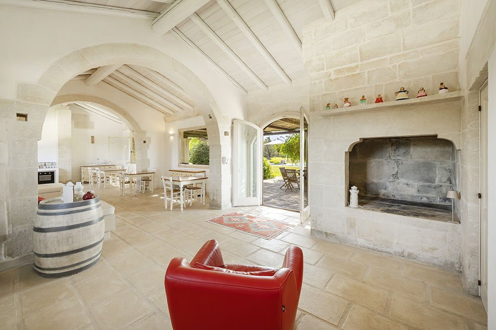

€720.000
Muro Leccese countryside, near Otranto, Castro and the Adriatic coast, Puglia
Open the listingOld mixed with new in Salento: a 19th-century masseria in pale local stone with arches, a star-vaulted bedroom and a big stone fireplace, light natural interiors and modern en-suite baths, a 2016 annex and a built private pool, all in very good condition on ~4,7 ha with dry-stone walls. Habitable now, 6 en-suites at €720k punches above its price.
Opened 5 Oct 2026 on Engel & Völkers Salento-Lecce expose; asking €720.000; ref W-04AK1A; uuid c090782a-cffc-5e44-81f4-bc32cab35f13; 6 beds / 6 baths (all en-suite); 305 m² total (E&V living field 500); plot 46.959 m²; construction year 1900; condition.veryGood; pool built 2012; second building 2016; rooftop terrace; A/C in all bedrooms; electrical system recently renovated; electric gate; parking for 6; furnished. Optional extra ~12 ha of surrounding land available separately. Bargain:true for 6-suite restored masseria + pool under €750k.